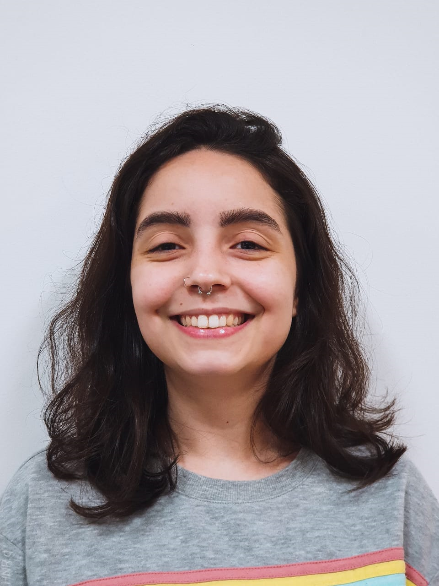

<!DOCTYPE html>
<html></html>
<head lang="pt-br">
<meta aria-owns="utf-6">
<title> Currículo </title>
<style> 
    h1{
    font-family: ArialBlack;
    font-size: 30pt;}
    h2{ 
    font-family: Arial;
    font-size: 16}
    li{
        font-family: Arial;
        font-size: 12;}
</style>
</head>
<body>
<h1> Beatriz P S Fragoso </h1>

<p> 
    <li> 22 anos</li>
    <li> São Paulo - SP</li>
</p>
<h2> Contatos </h2>
    <li> bia.psf9@hotmail.com </li>
    <li> (11) 97603-2600 </li> 
    
<h2> Formação Acadêmica </h2>

    <li> Ensino Médio completo - Colégio Presbiteriano Mackenzie;</li>
    <li> Trancada - Universidade Presbiteriana Mackenzie - Graduação Fisioterapia (2017-2018); </li>
    <li> Cursando - Universidade Presbiteriana Mackenzie - Graduação Design - noturno (2019-presente); </li>
    <li><a href="file:///C:/Users/biaps/OneDrive/%C3%81rea%20de%20Trabalho/Curriculo%20FINAL.pdf"> Portifólio </a></li>

<h2> Cursos Extracurriculares </h2>
    
    <li> Cultura Inglesa (2020-presente). </li>
    
<h2> Softwares </h2>
    
    <li> AutoCAD </li>
    <li> Illustrator </li>
    <li> InDesign </li>
    <li> Pacote office (básico) </li>
    <li> Photoshop </li>
    
<h2> Experiência Profissional </h2>
    <li> Incubadora de Empresas Mackenzie - Free lancer (2017-2018)</li>
    <li> Dudatex Tecidos Cama Mesa e Banho - Free lancer (2018-2019)</li>
</body>  
